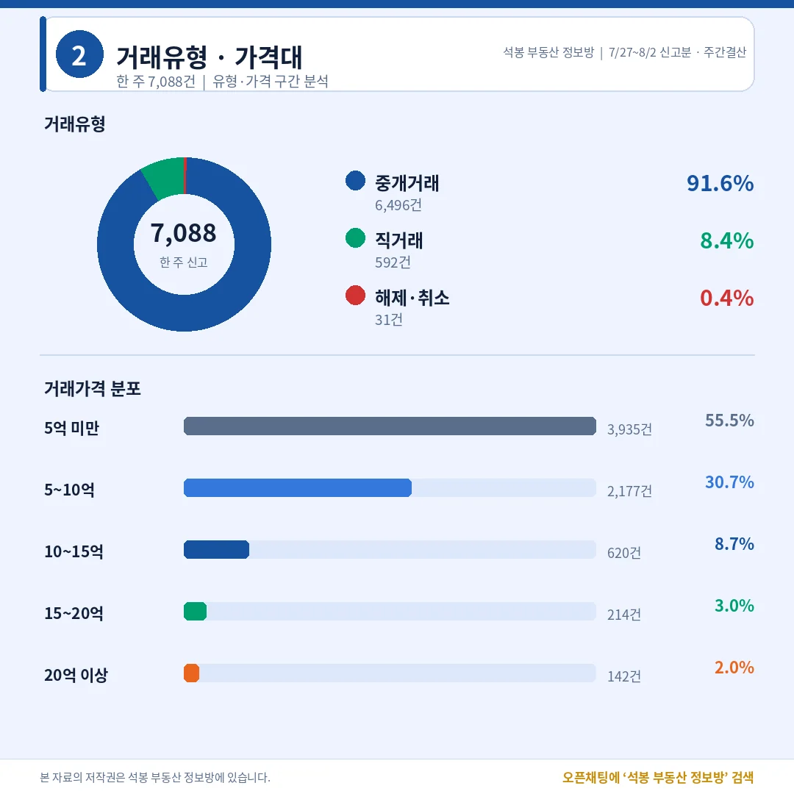
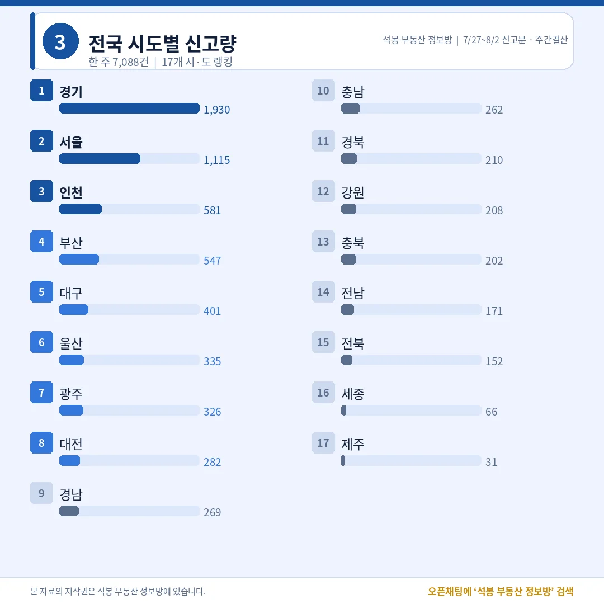
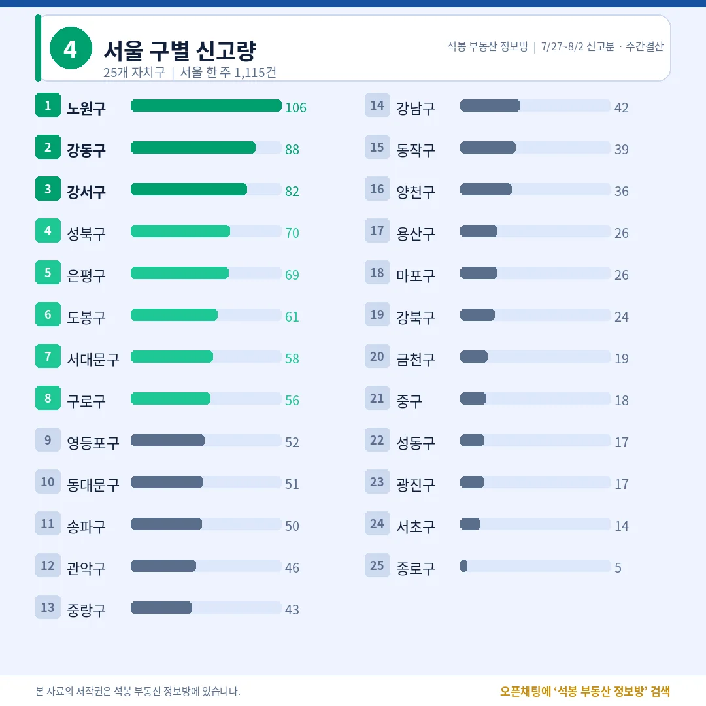
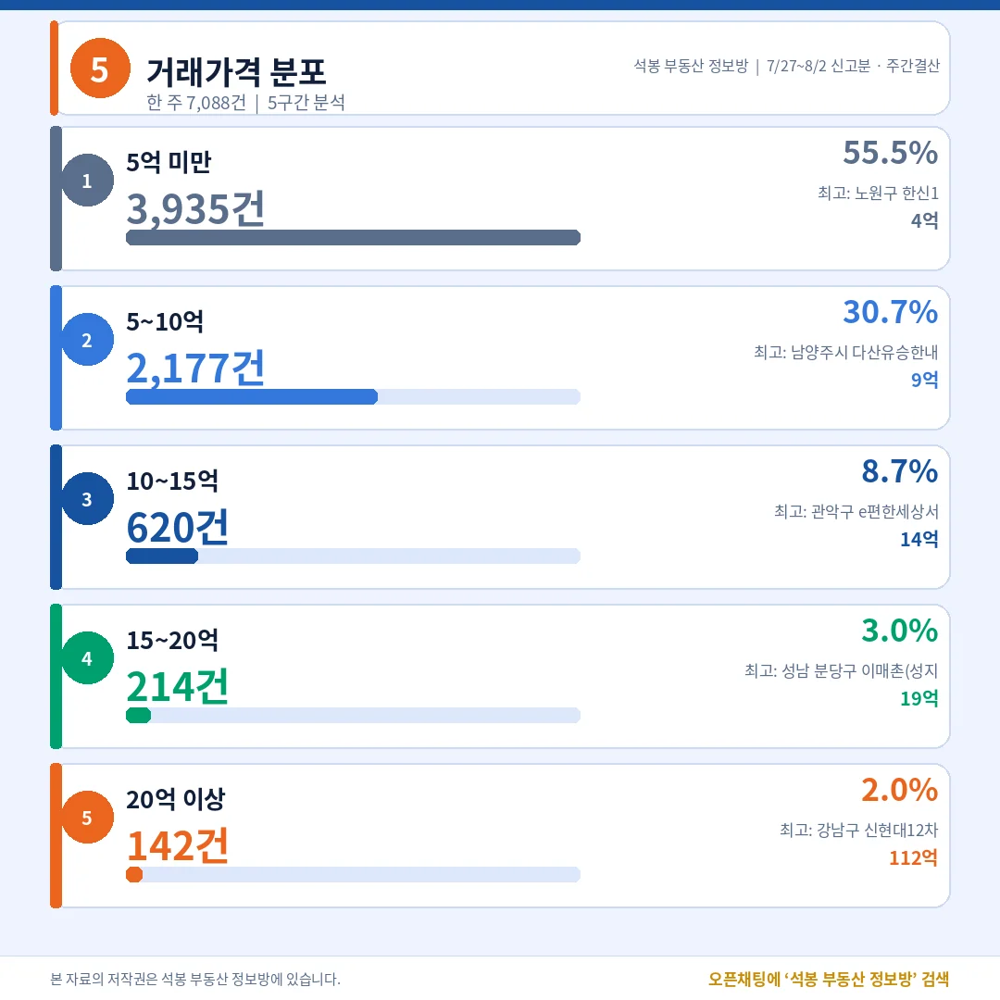
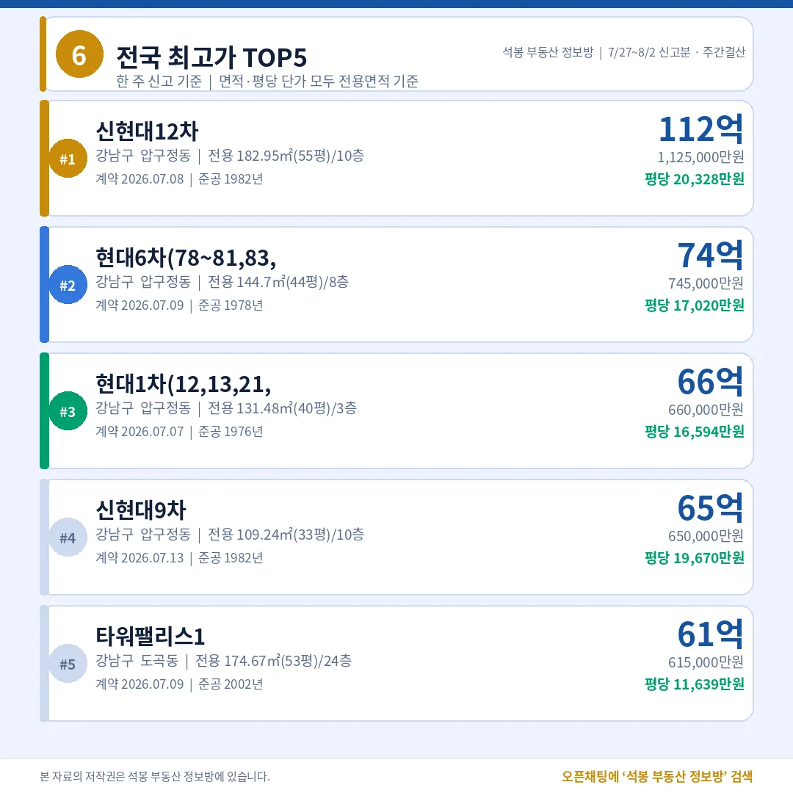
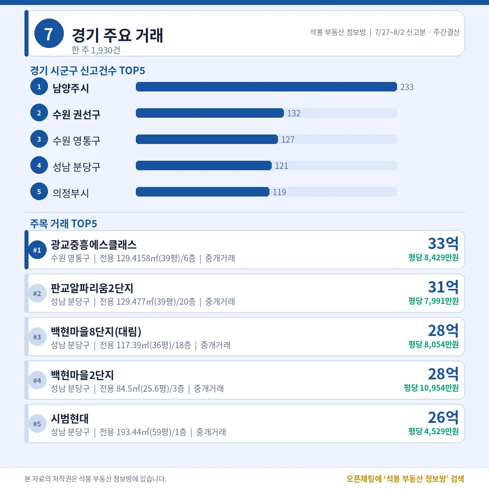
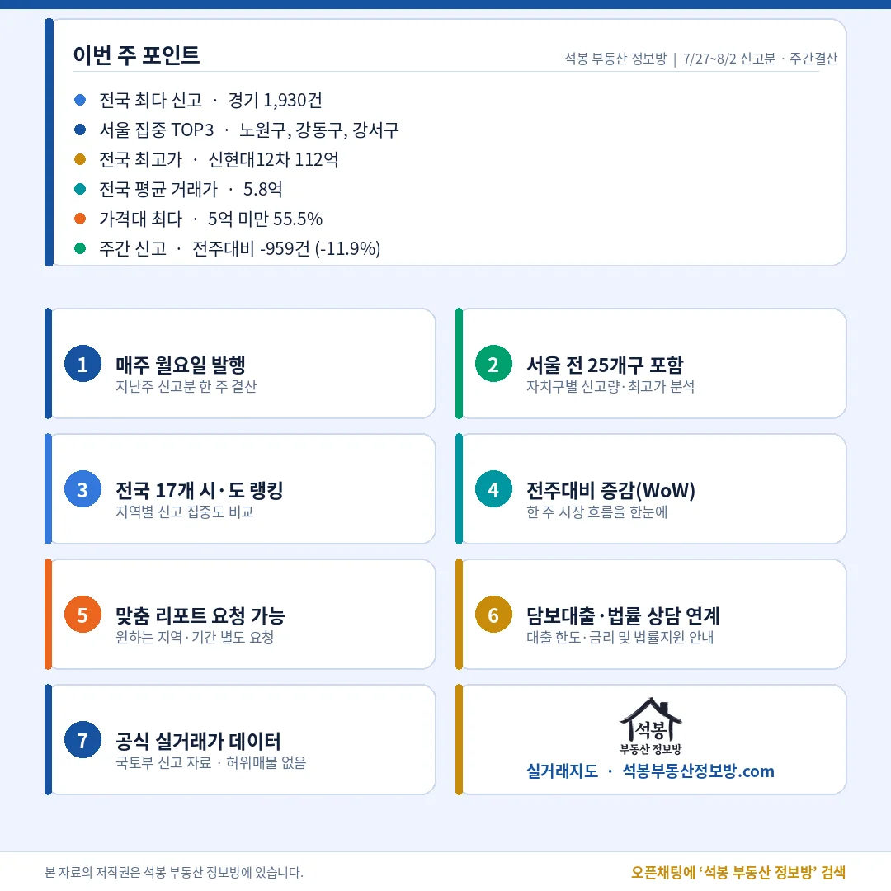

지난주(7월 27일~8월 2일) 전국에서 아파트 7,088건이 실거래로 신고됐습니다. 그 전주 8,047건보다 959건(-11.9%) 줄어든 수치입니다. 그런데 금액 상단은 오히려 한 곳으로 더 모였습니다. 전국 최고가 다섯 자리 가운데 네 자리를 강남구 압구정동 한 동네가 가져갔거든요. 거래는 줄었는데 상단은 좁아진 한 주, 숫자로 정리해 드립니다.
단지명을 누르면 그 단지의 실거래 내역과 시세를 바로 볼 수 있습니다. (면적·평당 단가는 모두 전용면적 기준)
지난주 시장 한눈에: 중개 91.6%, 몸통은 5억 미만 55.5%

거래유형·가격대
전체 7,088건 가운데 중개거래가 6,496건으로 91.6%였습니다. 직거래(공인중개사를 끼지 않고 매도인과 매수인이 직접 한 거래)는 592건 8.4%, 계약 해제·취소는 31건 0.4%에 그쳤습니다. 상위 지역을 단지별로 뜯어봤을 때 한 단지에 물량이 몰린 벌크 신고(기관이나 법인이 여러 채를 한꺼번에 신고하는 것) 흔적은 나오지 않았습니다. 가장 많이 팔린 단지가 노원구에서 4건, 남양주에서 6건 수준이라 특정 물량이 통계를 부풀린 구간은 없었다는 뜻입니다.
가격대는 5억 미만이 3,935건(55.5%)으로 절반을 넘겼고 5~10억이 2,177건(30.7%)으로 뒤를 이었습니다. 둘을 합치면 86.2%, 열 건 중 여덟 건 넘게 10억 아래에서 거래됐습니다. 10~15억 620건(8.7%), 15~20억 214건(3.0%), 20억 이상은 142건으로 2.0%였습니다. 전주 대비 신고가 959건 줄었지만 이 구성비 자체는 거의 흔들리지 않았습니다. 거래가 줄어드는 국면에서도 시장의 몸통이 중저가라는 사실은 그대로였다는 이야기입니다.
한 가지 짚어둘 점이 있습니다. 지난주는 8월 1일 신고분이 자료에 잡히지 않았습니다. 하루치가 빠진 만큼 실제 감소폭은 -11.9%보다 작을 수 있다는 점을 감안하고 보시는 편이 정확합니다.
여기서부터는 회원에게 보여드립니다
카카오 로그인 3초면 전문을 읽을 수 있습니다. 무료입니다.
가입하시면 지역 시장조사 보고서(약식)를 2회 무료로 요청하실 수 있습니다.
이미 회원이면 같은 버튼으로 로그인만 됩니다
전국 어디서 거래됐나: 경기 1,930건, 수도권 51.2%

전국 시도별 랭킹
시도별로는 경기 1,930건이 전국 1위였습니다. 혼자 전국의 27.2%를 가져갔습니다. 서울 1,115건, 인천 581건이 뒤를 이었고 수도권 세 곳을 합치면 3,626건, 전국의 51.2%입니다. 아파트 두 채 중 한 채는 수도권에서 손바뀜한 셈입니다.
수도권 밖에서는 부산 547건이 가장 많았고 대구 401건, 울산 335건, 광주 326건, 대전 282건 순이었습니다. 울산이 광주를 앞선 점이 눈에 띕니다. 세종(66건)과 제주(31건)는 표본이 얇아 주간 단위 해석은 조심스럽습니다. 이 정도 건수에서는 단지 한 곳의 거래만으로도 평균이 크게 흔들리기 때문입니다.
서울 자치구별: 노원 106건 1위, 강남은 42건으로 14위

서울 자치구별 거래량
서울 1,115건을 자치구로 나누면 노원구 106건이 1위였습니다. 강동구 88건, 강서구 82건, 성북구 70건, 은평구 69건, 도봉구 61건이 뒤를 이었습니다. 상위권을 노원·강동·강서·성북·은평 같은 중저가 실수요 벨트가 채운 구도입니다. 노원구 106건을 단지별로 갈라보면 가장 많은 단지가 4건(청암2단지, 동신, 상계주공1차 등)으로 전체의 3.8%에 불과했습니다. 특정 단지 몰아치기가 아니라 상계·중계·월계 구축 여기저기에 매수세가 얇게 퍼진 모양새였습니다.
반대쪽을 보면 강남구는 42건으로 14위, 서초구는 14건으로 24위였습니다. 서울 거래 스물여섯 건 중 한 건만 강남구에서 나왔다는 뜻입니다. 그런데 전국 최고가 상위 10건 중 8건이 바로 그 강남구에서 나왔습니다. 7월 30일 데일리에서 압구정 112억과 노원 28건을 나란히 놓고 짚어드렸는데, 하루가 아니라 한 주를 통으로 봐도 같은 그림이 반복됐습니다. 물량은 외곽에서, 기록은 강남에서 나옵니다.
가격대별로 보면: 20억 위 시장은 네 곳이 절반

가격대 상세
구간별 최고가를 보면 각 구간이 어떤 시장인지 드러납니다. 5억 미만 3,935건의 꼭대기는 노원구 하계동 한신1(4억 9,900만원), 5~10억 구간은 남양주 다산동 다산유승한내들골든뷰(9억 9,800만원), 10~15억은 관악구 봉천동 e편한세상서울대입구2단지(14억 9,800만원)였습니다. 세 구간 모두 상한선 코앞에서 최고가가 형성됐다는 점이 재미있습니다. 반면 20억 이상 142건은 지역이 확 좁아집니다. 해제 건을 뺀 기준으로 강남구 26건, 송파구 21건, 성남 분당구 17건, 용산구 15건 순이었고, 이 네 곳만으로 20억 이상 거래의 절반을 넘겼습니다. 같은 아파트 거래라도 5억 아래와 20억 위는 참여자도 물건도 사실상 다른 시장입니다.
지난주 최고가: 압구정동 한 동네가 1·2·3·4위

전국 최고가 TOP5
전국 최고가 1위는 압구정동 신현대12차 112억이었습니다. 전용 182.95㎡(55평) 10층, 1982년에 지어진 집입니다. 2위 현대6차 74억(전용 144.7㎡·44평, 1978년 준공), 3위 현대1차 66억(전용 131.48㎡·40평, 1976년 준공), 4위 신현대9차 65억(전용 109.24㎡·33평, 1982년 준공)까지 네 자리가 모두 압구정동입니다. 5위만 도곡동 타워팰리스1 61억(전용 174.67㎡·53평, 2002년 준공)으로 자리를 지켰습니다.
준공연도를 보면 이상하게 느껴질 수 있습니다. 1976년부터 1982년 사이에 지어진 집들이 2002년 준공 타워팰리스보다 비쌉니다. 평당 단가로 보면 차이가 더 벌어집니다. 신현대12차가 평당 20,328만원(전용 기준)인 데 비해 타워팰리스1은 평당 11,639만원, 대략 1.75배 차이입니다. 건물의 값이 아니라 땅과 재건축 기대가 값을 만든다는 것을 이보다 선명하게 보여주는 숫자도 드뭅니다.
계약일도 흥미롭습니다. 지난주 신고된 압구정동 여섯 건 중 다섯 건의 계약일이 7월 7일부터 13일 사이, 딱 한 주에 몰려 있었습니다. 실거래 신고는 계약 후 30일 안에 하면 되니, 7월 초에 붙은 계약들이 3주쯤 지나 한꺼번에 장부에 올라온 것으로 보입니다. 우리가 지난주 자료로 읽는 상단은 실은 7월 초의 시세라는 이야기이기도 합니다.
주목 지역: 경기는 남양주와 분당, 인천은 송도

경기/인천 주요 거래
경기 1,930건 가운데 남양주시가 233건으로 1위였습니다. 수원 권선구 132건, 수원 영통구 127건, 성남 분당구 121건, 의정부시 119건이 뒤를 이었습니다. 남양주 233건도 별내와 다산 신도시 여러 단지에 5~6건씩 흩어진 거래여서 특정 물량이 만든 착시는 아니었습니다. 다만 건수와 금액의 주인공은 또 갈립니다. 경기 최고가는 수원 영통구 광교중흥에스클래스 33억(전용 129.42㎡·39평, 평당 8,429만원)이었고, 그다음은 판교알파리움2단지 31억, 백현마을8단지 28억, 백현마을2단지 28억으로 성남 분당구가 줄줄이 이름을 올렸습니다.
인천 581건은 연수구 126건, 부평구 109건, 서해구 74건, 남동구 72건, 검단구 71건 순이었습니다. 금액 상단도 연수구가 독점하다시피 했습니다. 힐스테이트송도더스카이 14억을 필두로 송도더샵파크애비뉴 13억(전용 84.51㎡·25.6평, 평당 5,261만원), 송도더샵퍼스트파크 F15BL 13억까지 주목 거래 다섯 건이 전부 송도동에서 나왔습니다. 경기가 남양주와 분당으로 나뉜 것과 달리, 인천은 건수와 금액이 모두 송도 한 곳으로 모이는 구조입니다.
이번 주 인사이트

지난주 시장은 두 문장으로 요약됩니다. 첫째, 거래는 줄었지만 성격은 그대로였습니다. 7,088건은 전주보다 959건 적지만 중개거래 비중 91.6%, 5억 미만 55.5%라는 구성은 거의 그대로였습니다. 특정 기관의 일괄 신고 같은 왜곡도 상위 지역에서 발견되지 않았습니다. 8월 1일 자료가 빠진 점을 감안하면 실제 위축은 숫자가 보여주는 것보다 완만했을 가능성이 큽니다.
둘째, 상단은 오히려 더 좁아졌습니다. 전국 최고가 다섯 자리 중 네 자리를 압구정동이 가져갔고, 20억 이상 거래의 절반 넘게가 강남·송파·분당·용산 네 곳에 몰렸습니다. 정작 강남구의 주간 거래는 42건으로 서울 14위에 그쳤습니다. 거래량이 줄어드는 국면에서 중저가 시장은 건수가 얇아지는 반면 초고가 시장은 소수 단지의 기록으로 버티는, 서로 다른 두 개의 온도가 한 장의 통계 안에 함께 담겨 있습니다.
원자료: 국토교통부 실거래가 공개시스템(2026년 7월 27일~8월 2일 신고분, 8월 1일 신고분 미수집) · 면적과 평당 단가는 모두 전용면적 기준 · 편집·제작: 석봉 부동산 정보방 · 본 자료는 정보 제공을 목적으로 하며 투자 권유가 아닙니다.